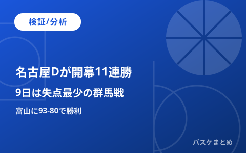

名古屋Dが開幕11連勝、9日は失点最少の群馬と対戦

名古屋ダイヤモンドドルフィンズが、11月7日に富山グラウジーズを93対80で下しました。開幕からの連勝は11に伸びています。
この記事では、富山戦の内容を振り返ります。次戦の相手の群馬クレインサンダーズとの数字の違いも分析します。
19時に更新：次戦が11月9日の群馬戦であることを訂正し、富山戦の得点者と群馬との比較を追記しました。
【検証】名古屋Dが富山に93-80で勝利
試合は富山のホームで行われました。名古屋Dが93対80で勝ちました。
第1クォーターは22対15、前半は45対35で名古屋Dがリードしました。第3クォーターは富山が27対26で上回りました。
第4クォーターは名古屋Dが22対18で制し、13点差で終えました。
得点はアーロン・ヘンリー選手が27点でした。スコット・エサトン選手は19得点11リバウンドです。
ライアン・ルーサー選手は18得点7リバウンドでした。斎藤拓実選手は14得点10アシストです。
ラナヘッドコーチは、斎藤選手がコートにいる時はほとんどタイムアウトが要らないと話しました。
富山は今季通算8勝6敗で、東地区13チーム中6位です。この試合には今季最多の4903人が入場しました。
【分析】開幕11戦で平均18.4点差
名古屋Dは11戦全勝で、得失点差の合計は+202です。1試合あたりに直すと平均+18.4点になります。
平均得点は92.5点で、平均失点は74.2点です。
全勝で並ぶ相手はいません。13勝1敗の広島は、平均+11.2点です。
【分析】前任記録は千葉ジェッツの開幕10連勝
前シーズンは、千葉ジェッツが2025年10月29日の秋田戦で開幕10連勝としました。
その連勝は、2025年11月1日のアルバルク東京戦で止まりました。名古屋Dは今回、この10連勝を上回る11連勝目を挙げました。
【分析】次戦の群馬は平均失点がリーグ最少
名古屋Dの次戦は、11月9日19時5分から群馬のホームで行われます。
群馬は10勝4敗で、東地区3位です。平均失点は73.6点で、26チームの中で最も少ない数字です。
名古屋Dの平均失点74.2点は、これに次ぐ2番目です。守備で上位の2チームが当たる形になります。
平均得点は名古屋Dが92.5点、群馬が82.4点です。攻撃力では名古屋Dが上回っています。
注目点は、群馬が名古屋Dの得点をどこまで抑えられるかです。結果は試合を待つ必要があります。
【分析】その先の秋田戦
11月13日は、秋田のホームで秋田と対戦します。
秋田は11月8日に信州に96対101で敗れました。リード・トラビス選手は11月5日からインジュアリーリストに登録されています。
出典（9件）
- バスケットボールキング：名古屋Dが開幕11連勝、指揮官が齋藤拓実に絶大な信頼（11/8）
- 北國新聞：富山グラウジーズ 今季無敗の名古屋に黒星 今季最多4903人来場（11/8）
- デイリースポーツ：名古屋Dが開幕11連勝、バスケBプレミア（11/7）
- B.LEAGUE公式：B.PREMIER順位表（11/8）
- B.LEAGUE公式：11月8日の日程・結果
- B.LEAGUE公式：秋田vs名古屋Dの試合ページ（11/13）
- B.LEAGUE公式：インジュアリーリストの公示（11/6）
- 日本経済新聞：千葉Jが開幕10連勝、長崎は9連勝（2025/10/29）
- バスケットボールキング：千葉Jの連勝を10でストップ、A東京が7連勝達成（2025/11/1）